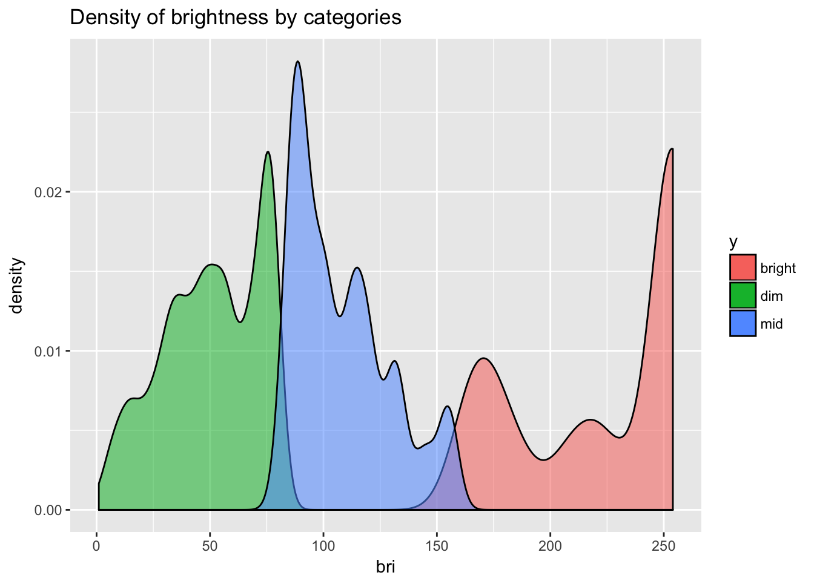
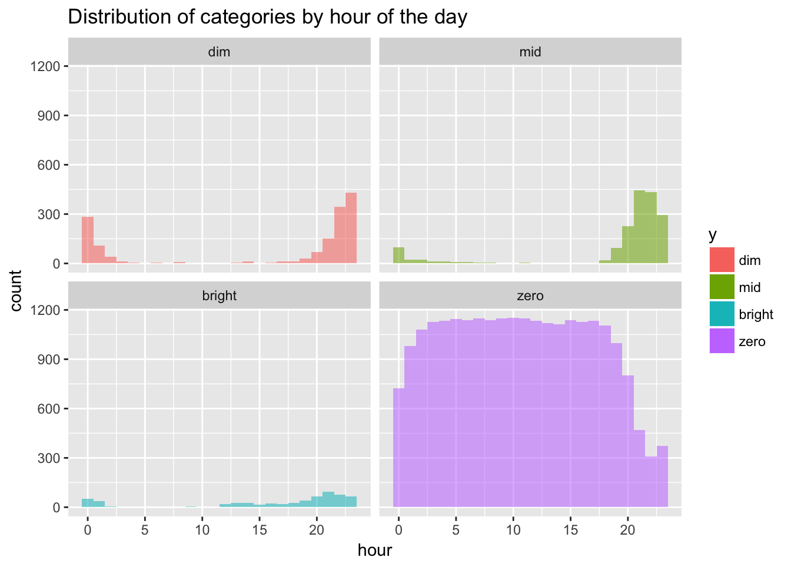
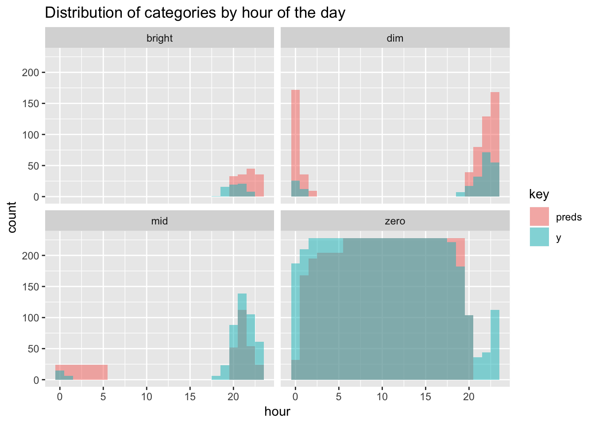

Tamas Szilagyi


Rich API interfaces are one of the main ingredients of today’s smart devices. They are by definition built for interconnectivity and there is an active community of developers creating apps as microservices on top of them. Philips Hue is no exception with it’s wide variety of apps available to users.
But you don’t need to code an entire mobile application to take advantage of the low level access. Using modern tools it only takes a few lines of code to build a self-learning algorithm, running in production in your home. Not only can we access external API’s, we can just as easily expose static files, functions or models as an API of our own.
My original inspiration for this post was Max Pagel’s article on training a neural network to automatically control his Philips Hue lights. In fact, I purchased my first set of Hue bulbs because of it. In summary, this post will describe how to build and productionize a classifier in R that controls the brightness of Philips Hue lights.
Much like in my post on Spotify I have set up a cronjob to execute the Python script that pings the API and saves the lights’ state data locally, to be picked up by Luigi tasks for parsing and copying to S3 further downstream. You can find the relevant code on my Github. The Hue API documentation contains information on authentication and the types of calls available.
The starting point for this post will be the parsed .json file containing all of the log data for my “Dinner Lamps”. They are the two main lights in my living and dining area room at the moment.
library(aws.s3)
library(jsonlite)
# read file from amazon
aws.signature::use_credentials()
df <- s3read_using(object = paste0("hue_full_2017-08-26.json"), fromJSON, bucket = "ams-hue-data")
str(df)## 'data.frame': 30322 obs. of 15 variables:
## $ on.1 : logi FALSE FALSE FALSE FALSE FALSE FALSE ...
## $ on.2 : logi FALSE FALSE FALSE FALSE FALSE FALSE ...
## $ bri.2 : int 131 131 131 131 131 131 131 131 131 131 ...
## $ type.1 : chr "Dimmable light" "Dimmable light" "Dimmable light" "Dimmable light" ...
## $ type.2 : chr "Dimmable light" "Dimmable light" "Dimmable light" "Dimmable light" ...
## $ bri.1 : int 131 131 131 131 131 131 131 131 131 131 ...
## $ modelid.2 : chr "LWB010" "LWB010" "LWB010" "LWB010" ...
## $ modelid.1 : chr "LWB010" "LWB010" "LWB010" "LWB010" ...
## $ name.1 : chr "Dinner Lamp 2" "Dinner Lamp 2" "Dinner Lamp 2" "Dinner Lamp 2" ...
## $ reachable.1: logi TRUE TRUE TRUE TRUE TRUE TRUE ...
## $ reachable.2: logi TRUE TRUE TRUE TRUE TRUE TRUE ...
## $ name.2 : chr "Dinner Lamp 1" "Dinner Lamp 1" "Dinner Lamp 1" "Dinner Lamp 1" ...
## $ alert.1 : chr "none" "none" "none" "none" ...
## $ log_time : chr "2017-05-12 17:00:02" "2017-05-12 17:05:01" "2017-05-12 17:10:02" "2017-05-12 17:15:01" ...
## $ alert.2 : chr "none" "none" "none" "none" ...The structure of the original .json file is such that each lamp has a separate (numbered) column for every variable. The dataset is essentially a timeseries where each row represent a snapshot of the lamps’ state at $log_time, or every 5 minutes. Before moving on, let’s tidy things up.
library(tidyr)
tidy_df <- df %>% gather(key, value, -log_time) %>%
separate(key, into = c("variable", "lamp"), sep = "\\.") %>%
spread(variable, value)
str(tidy_df)## 'data.frame': 60644 obs. of 9 variables:
## $ log_time : chr "2017-05-12 17:00:02" "2017-05-12 17:00:02" "2017-05-12 17:05:01" "2017-05-12 17:05:01" ...
## $ lamp : chr "1" "2" "1" "2" ...
## $ alert : chr "none" "none" "none" "none" ...
## $ bri : chr "131" "131" "131" "131" ...
## $ modelid : chr "LWB010" "LWB010" "LWB010" "LWB010" ...
## $ name : chr "Dinner Lamp 2" "Dinner Lamp 1" "Dinner Lamp 2" "Dinner Lamp 1" ...
## $ on : chr "FALSE" "FALSE" "FALSE" "FALSE" ...
## $ reachable: chr "TRUE" "TRUE" "TRUE" "TRUE" ...
## $ type : chr "Dimmable light" "Dimmable light" "Dimmable light" "Dimmable light" ...The 15 columns are now reduced to 9 because each variable appears only once thanks to adding the key column $lamp to the dataset. But we are not quite done cleaning yet: I use the two lamps in sync, so we need only data from one of them. When the lamps are not on nor reachable, $bri should be set to 0. Using the now correct brightness values, we create the four categories for the classifier to work with. Lastly, there were days I wasn’t home, so we can rid of of those observations.
library(dplyr)
binned_df <- tidy_df %>% filter(lamp == "1") %>%
mutate(bri = as.numeric(replace(bri, on=="FALSE" | reachable=="FALSE",0)),
y = as.factor(ifelse(bri == 0, "zero",
ifelse(between(bri,0,80), "dim",
ifelse(between(bri,80,160),"mid","bright")))))
off_days <- binned_df %>% group_by(date = as.Date(log_time,tz="Europe/Amsterdam")) %>%
dplyr::summarise(total_bri = sum(bri)) %>%
filter(total_bri == 0 ) %>%
select(date)
binned_df <- binned_df %>% filter(!as.Date(log_time) %in% off_days$date)How does the distribution of our target variable look?
table(binned_df$y)##
## bright dim mid zero
## 598 1533 1710 23889Roughly 86% of the time the lamps are off, resulting in an unbalanced dataset. What about brightness values lamps were on, according to the three remaining categories?

The distribution seems to be close to normal with a positive skew, and a massive outlier all the way at the end of the spectrum. That’s maximum brightness, the default when I switch the lights on/off with a physical switch.
To get an intuition for my usage patterns, I’ll also plot a histogram of hour of the day for all four categories.

The only times the lamps are not structurally off, is in the evening and the early hours. Dim and mid values are the dominant category after 8PM instead. Another slight dip in zero appears around and shortly after midnight, compensated by the second largest peak in dim, and a few instances of mid and bright. Bright observations in general are sparse and will be tough to predict.
The only variables I will use for training, are time based: day of the week; month; week number; weekend or not; time of the day; and minutes since 12PM, 6AM, 12AM and 6PM. A datetime string will then suffice to generate a prediction on the fly, a boon for putting things into production later on. I packaged a chain of dplyr commands inside the function add_vars() to add the above variables to the dataset:
df_vars <- binned_df %>% add_vars(extra_var = "yes")Remember we are dealing with an unbalanced dataset, that also happens to be a timeseries. To remedy the former, I will use class weights to penalize the misclassification of the minority classes. Secondly, I will look at the Area Under the Curve to evaluate the model, which will be less affected than Accuracy by class imbalance if I set dim as the positive class. If not for these measures, the algorithm would gladly classify 100% of instances as "zero", achieving stunning accuracy on paper and complete darkness in my living room.
Now, why does it matter that we have a timeseries? In any dataset with a time component, the split between train and test sets should not be random. Otherwise, the model can and will learn from the future, and severely overfit the data. The correct cross-validation strategy instead is to fold the data according to time. Train should always the before and test the after. For our convenience caret provides the createTimeSlices() function to create the indices of the CV-folds. An extra testing set will be held out to validate our model on unseen data after we are done modeling.
We’ll now train a gbm model, using the caret package, which comes with a myriad of convenience tools to make the process easier and the code a lot more concise.
library(caret)
# Split train and test sets
training <- df_vars[df_vars$date < "2017-08-05",] %>% select(-date,-log_time)
testing <- df_vars[df_vars$date >= "2017-08-05",] %>% select(-date)
# create cross validation folds
idx <- createTimeSlices(1:nrow(training),
initialWindow = 15000,
horizon = 5000, skip = 1000, fixedWindow = F)
# create model weights vector
model_weights <- ifelse(training$y == "zero",0.2,
ifelse(training$y == "mid",1.2,1))
# define cross validation logic
fitControl <- trainControl(## 10-fold CV
index = idx[[1]],
indexOut = idx[[2]],
summaryFunction = multiClassSummary,
classProbs = T)
# create tunegrid for hyperparameter search
gbmGrid <- expand.grid(interaction.depth = c(1,3,5),
n.trees = c(5,10,30),
shrinkage = c(0.1),
n.minobsinnode = 5)
# train model
gbmFit <- train(y ~ ., data = training,
method = "gbm",
trControl = fitControl,
metric = "AUC",
weights = model_weights,
verbose = FALSE,
tuneGrid = gbmGrid)Printing gbmFit to the console will give us the performance metrics across hyperparameters, and the ultimately selected values maximizing our metric of choice. While this is certainly useful information, I find it more intuitive to immediately look at the confusion matrix and see where our model is going off the rails:
preds<-predict(gbmFit, testing)
table(preds, testing$y)##
## preds dim mid bright zero
## dim 85 189 21 338
## mid 56 106 17 207
## bright 42 69 0 39
## zero 37 79 27 4160Most mistakes are made trying to classify bright and mid. The model gets 0 bright values right and only manages to do so correctly 14% of the time for mid. But when do errors happen? To dig a little deeper let’s look at the previous histogram of categories by hour again for the test set, but now with the predictions overlaid on top.

Bright values were always going be hard to guess, but the model at least comes close in terms of hours, but off on the exact days. The majority of misclassification comes from overzealously predicting dim in the evening and around midnight, when it should really be either mid or zero. That looks like a workable scenario for me.
To control the lights, we can make PUT requests to the Hue bridge. To set bri, we need actual brightness values. An intuitive option is to pick the median values per category per hour:
median_values <- binned_df %>% filter(bri > 0) %>%
mutate(hour = lubridate::hour(as.POSIXct(log_time, tz = "Europe/Amsterdam"))) %>%
select(hour,bri, y) %>%
group_by(y, hour) %>%
dplyr::summarise(med = median(bri)) %>%
ungroup()Because we only used date and time based features for modeling, all we need for a prediction is a timestamp string. Using for_sample and def_vars(), we define a custom function predict_hue():
predict_hue <- function(timestamp){
df <- data.frame(log_time =as.POSIXct(timestamp)) %>%
add_vars(extra_var = "no")
pred <- predict(gbmFit, newdata = df)
if (pred=="zero") {
x <- 0
} else {
x <- median_values %>% filter(y == pred & hour == lubridate::hour(timestamp)) %>%
select(med) %>% unlist()
}
return(x)
}Now to expose the above function as an API, we literally need three lines of code with jug. Ever since I saw the package presented at useR2017, I have been looking for a use case to play with.
library(jug)
jug() %>% post("/predict-hue", decorate(predict_hue)) %>%
simple_error_handler_json() %>%
serve_it()
#Serving the jug at http://127.0.0.1:8080Great. We can now make calls to this API and get a prediction supplying the current time. The nifty thing is that because API’s are language agnostic, we can access it from the programming paradigm of our choosing. I currently have a basic Python function that communicates with both API’s, transferring a prediction to the Hue Bridge every 5 minutes. But we could just as well build a whole interface on top, or create a chatbot for improved user experience. Perhaps I’ll do a follow-up post on this topic.
There is something very satisfying about building your own data products and seeing them at work. Even something as trivial as controlling the light switch for you. I only have data since this year May, so there’s a good chance our model will get smarter as days go by. We can easily schedule to retrain the model every week or even day, without having to lift a finger. Most of the code in this post is packaged up as a handful of R functions deployed on my Raspberry Pi. Now, when I choose to pass out on my couch next time, at least lights won’t stay on for too long.